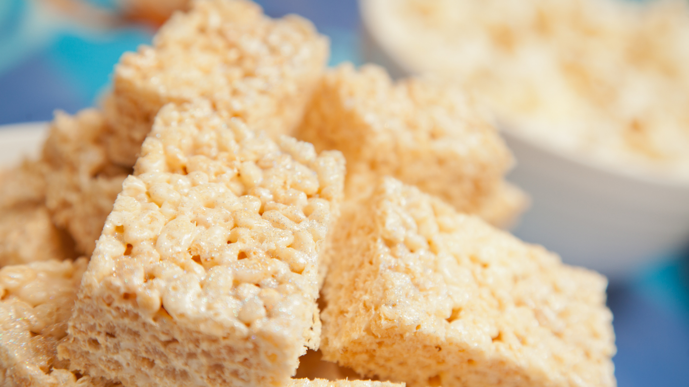

Rice Krispies

Description
These classic Rice Krispie Treats are chewy, buttery, and perfectly sweet. Made with just three ingredients, they come together in minutes and are a favorite for kids and adults alike. Perfect for parties, lunchboxes, or a quick no-bake dessert.
Ingredients:
- 3 tablespoons butter
- 1 package (10 oz) mini marshmallows (about 6 cups)
- 6 cups Rice Krispies cereal
Instructions:
- In a large pot, melt the butter over low heat.
- Add the marshmallows and stir until completely melted and smooth.
- Remove from heat and gently stir in the Rice Krispies cereal until evenly coated.
- Press the mixture into a greased 9x13-inch pan using a buttered spatula or wax paper.
- Let cool, then cut into squares and enjoy.
Optional: Drizzle with melted chocolate or add sprinkles for extra fun.
Sweet Treats